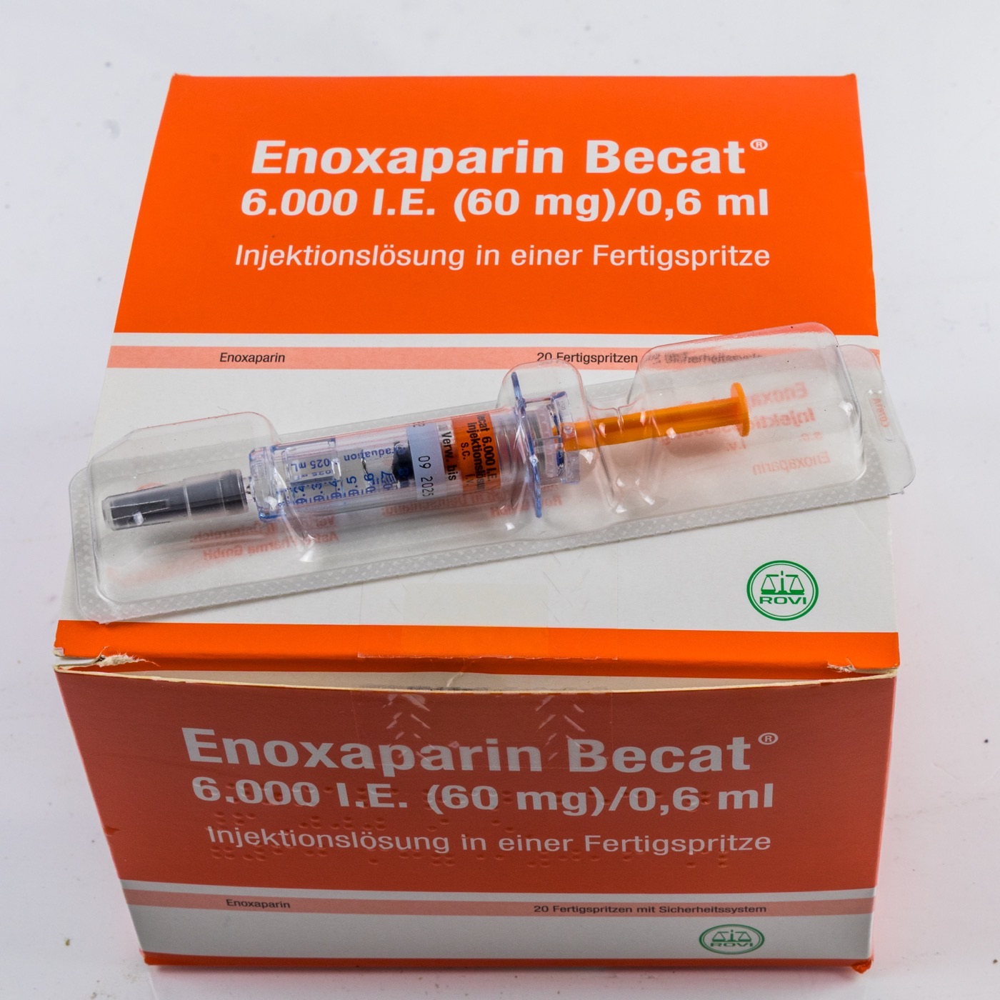

Página 5 · Tratar o evento agudo
Heparina sim, varfarina não, DOAC nunca
A escolha — dose plena 1 mg/kg 12/12h.
Proscrita na gestação (liberada só no puerpério).
Não entra de jeito nenhum — gestação nem lactação.
A mesma indicação, três respostas radicalmente diferentes. É a segunda parada da lente GO ≠ clínica geral: a varfarina, hábito da clínica, aqui é proibida. O contraste se resolve ao longo do texto — inclusive a exceção que a USP usou para pegar quem decorou.
A conduta do agudo: anticoagular pleno com HBPM 1 mg/kg 12/12h
No tratamento do evento agudo, o princípio é o mesmo da clínica: a paciente tem de ser anticoagulada. A droga de escolha é a heparina de baixo peso molecular (HBPM), em dose plena. E a dose plena tem valor exato, que a banca cobra: 1 mg/kg a cada 12 horas (12/12h). É a enoxaparina terapêutica, o regime por peso duas vezes ao dia.
Anticoagula a gestação inteira E o puerpério — não parar no parto
A duração tem uma regra de ouro que também é pegadinha. Se o evento ocorre durante a gestação, anticoagula-se durante toda a gestação E também durante todo o puerpério. Não se para no parto. E o motivo você já conhece: é justamente no puerpério que há a maior chance de repetir o evento. Esquecer de manter a anticoagulação no pós-parto é abandonar a paciente no seu pico de risco.
Evento tardio: o critério clínico dos 3 a 6 meses
Há um cenário particular: o evento agudo tardio, por exemplo uma TVP ou um TEP com 38 semanas. Nesse caso, não se anticoagula "só aquelas 6 semanas do puerpério" e ponto — porque 6 semanas seria pouco. Vale o critério clínico já conhecido do TEV provocado: manter um tempo mínimo de 3 a 6 meses de anticoagulação. Ou seja, o evento perto do parto arrasta a anticoagulação para bem além do puerpério.
HBPM (enoxaparina) dose plena = 1 mg/kg SC de 12/12h. Evento agudo na gestação → toda a gestação + todo o puerpério. Evento tardio (ex.: 38 sem) → mínimo 3 a 6 meses.
Varfarina proscrita na gestação, trimestre a trimestre
A varfarina não é droga de escolha na gestação — e o motivo muda conforme o trimestre. No 1º trimestre ela é péssima: associa-se à embriopatia varfarínica (malformações do concepto). Não fazer. No 3º trimestre também é ruim: aumenta a chance de hemorragia (materna e fetal, perto do parto). E no 2º trimestre, mesmo sem esses dois desastres, a conduta continua sendo heparina — não se troca para varfarina só porque "passou o 1º tri". A varfarina fica de fora da gestação inteira.
A pegadinha da USP: a prótese metálica não é a regra geral
Registrada em prova (USP): apareceu a varfarina como "preferencial" numa questão — mas a paciente tinha prótese valvar metálica, um cenário distinto em que a varfarina de fato tem papel especial pela necessidade de anticoagulação de altíssima intensidade. Isso não se generaliza. Não saia fazendo varfarina para toda paciente de 2º trimestre porque uma questão mostrou varfarina numa portadora de prótese metálica. Para a gestante comum, a droga de escolha continua sendo a HBPM.
DOAC banido; varfarina liberada só no puerpério
Os DOACs e demais anticoagulantes orais não têm estudo de segurança na gestação — não usar. Também não são compatíveis com a amamentação, então saem tanto da gestação quanto do puerpério. A varfarina, por outro lado, tem uma reabilitação parcial: pode ser usada no puerpério, porque é compatível com a amamentação. Trocar para varfarina depois do parto é uma opção legítima. A regra final: durante a gestação, HBPM; no puerpério, pode-se manter HBPM ou trocar para varfarina; os demais orais (DOACs) não entram em nenhuma das duas fases.

A apresentação típica: seringa pré-preenchida para uso subcutâneo. A ideia-chave não é copiar a dose fixa da caixa, e sim reconhecer a droga certa e prescrever por peso — 1 mg/kg SC 12/12h na dose plena.
© Raimond Spekking, Wikimedia Commons. Licença CC BY-SA 4.0 · fonte
Licença share-alike (SA): reuso mantém a atribuição e a mesma licença.Quiz — fixação
Gestante de 2º trimestre com TVP aguda. Qual a conduta correta?
- B — a escolha em qualquer trimestre. HBPM plena, e a anticoagulação segue no puerpério — o pico de recorrência.
- A. Pegadinha da USP generalizada indevidamente: fora da prótese metálica, o 2º trimestre continua sendo heparina.
- C. DOAC sem estudo de segurança e incompatível com a amamentação — indefensável.
- D. Erro clássico de parar no parto, abandonando a paciente quando ela mais pode repetir o evento.
Sobre a varfarina no ciclo gravídico-puerperal, qual afirmação é correta?
- C — sai da gestação, reentra no puerpério. Embriopatia no 1º tri, hemorragia no 3º; no puerpério é compatível com o aleitamento.
- A. Inverte o pior cenário: o 1º trimestre é justamente o da embriopatia.
- B. Ignora o risco hemorrágico do 3º trimestre e troca segurança por conveniência.
- D. Confunde varfarina com DOAC: quem é incompatível com a amamentação é o DOAC.
Isso é para quem já trombosou nesta gestação. Falta a paciente que ainda não teve o evento mas tem risco — quem merece profilaxia, e em que degrau.